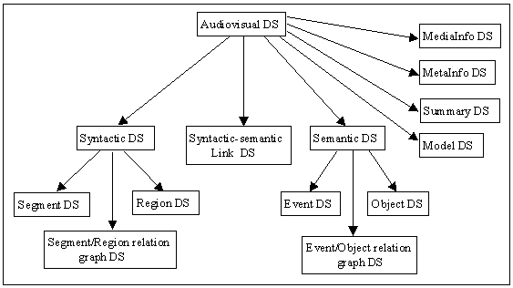

D-Lib Magazine
September 1999
Volume 5 Number 9
ISSN 1082-9873
MPEG-7
Behind the ScenesJane Hunter
Distributed Systems Technology Centre
University of Queensland
jane@dstc.edu.au
Abstract
The purpose of this article is to provide a better understanding of the objectives and components of the MPEG-7, "Multimedia Content Description Interface" standard, an overview of the current state of its development and an idea of its expected impact on digital libraries of the future.
Introduction
It's clearly much more fun to develop multimedia content than to index it. The amount of multimedia content available -- in digital archives, on the World Wide Web, in broadcast data streams and in personal and professional databases -- is growing out of control. But this enthusiasm has led to increasing difficulties in accessing, identifying and managing such resources due to their volume and complexity and a lack of adequate indexing standards. The large number of recently-funded DLI-2 projects related to the resource discovery of different media types, including music, speech, video and images, indicates an acknowledgement of this problem and the importance of this field of research for digital libraries. [1]
MPEG-7 [2] is being developed by the Moving Pictures Expert Group (MPEG) [3], a working group of ISO/IEC. Unlike the preceding MPEG standards (MPEG-1, MPEG-2, MPEG-4) which have mainly addressed coded representation of audio-visual content, MPEG-7 focuses on representing information about the content, not the content itself.
The goal of the MPEG-7 standard, formally called the "Multimedia Content Description Interface", is to provide a rich set of standardized tools to describe multimedia content.
A single standard which can provide a simple, flexible, interoperable solution to the problems of indexing, searching and retrieving multimedia resources will be extremely valuable and widely deployed. Resources described using such a standard will acquire enhanced value. Compliant hardware and software tools capable of efficiently generating and interpreting such standardized descriptions will be in great demand.
But will MPEG-7 be able to deliver such a standard -- one which satisfies its formidable goals and widely heterogeneous scope whilst concurrently providing simplicity, flexibility, interoperability and usability?
Objectives
MPEG-7 aims to standardize:
- a core set of Descriptors (Ds) that can be used to describe the various features of multimedia content;
- pre-defined structures of Descriptors and their relationships, called Description Schemes (DSs);
- a language to define Description Schemes and Descriptors, called the Description Definition Language (DDL);
- coded representations of descriptions to enable efficient storage and fast access.
MPEG-7 descriptions (a set of instantiated Description Schemes) will need to be linked to the content itself to allow fast and efficient searching for material of a user's interest. The descriptions may be physically located with the associated AV material, in the same data stream, on the same storage system, or the descriptions could be stored remotely. Hence mechanisms that can link the AV material to their MPEG-7 descriptions (and vice versa), regardless of where the content and its descriptions are located, are required.
Scope and Applications
MPEG-7 [4] is intended to describe audiovisual information regardless of storage, coding, display, transmission, medium, or technology. It will address a wide variety of media types including: still pictures, graphics, 3D models, audio, speech, video, and combinations of these (e.g., multimedia presentations). Examples of MPEG-7 data are an MPEG-4 stream, a video tape, a CD containing music, sound or speech, a picture printed on paper, or an interactive multimedia installation on the web.
MPEG-7 will address both retrieval from digital archives (pull applications) as well as filtering of streamed audiovisual broadcasts on the Internet (push applications). It will operate in both real-time and non real-time environments. A "real-time environment" in this context means that the description is generated at the same time as the content is being captured (e.g., smart cameras and scanners).
There are many applications and application domains which will potentially benefit from the MPEG-7 standard. Examples of applications include:
- Digital libraries (image catalogue, speech archive);
- Broadcast media selection (radio channel, TV channel);
- Multimedia editing (personalised electronic news service, media authoring).
The potential applications cover a wide range of domains which include:
- Education;
- Journalism (e.g., searching speeches of a certain politician using his name, his voice or his face);
- Cultural services (museums, art galleries);
- Film, Video and Radio archives;
- Entertainment (e.g., video-on-demand, searching a game, karaoke);
- Investigation services (surveillance, human characteristics recognition, forensics);
- Geographical information systems;
- Remote sensing (cartography, ecology, natural resources management);
- Telemedicine and bio-medical applications.
Work Plan
Between October 1996 and October 1998, the scope, objectives and requirements for MPEG-7 were defined. The end of this stage was marked by an open Call for Proposals (CfP) in October 1998, which asked for submissions of relevant technologies fitting the requirements [5]. In answer to the CfP, some 60 parties submitted, in total, almost 400 proposals. The proposals were evaluated at the MPEG-7 Test and Evaluation Meeting in Lancaster in February 1999, according to their ability to satisfy the requirements. Certain proposals and elements of proposals were selected to be incorporated into the current collaborative phase.
Participants involved in making and evaluating submissions and the ongoing development of MPEG-7 include broadcasters, electronics manufacturers, content creators and managers, publishers and intellectual property rights managers, telecommunication service providers and academic researchers.
During the (current) collaborative phase, selected elements of various proposals are incorporated into a common model (the eXperimentation Model, or XM). The goal is to build the best possible model, which is in essence a draft of the standard. The XM is updated and improved in an iterative fashion until MPEG-7 reaches the Committee Draft (CD) stage, after several versions of the Working Draft. Improvements to the XM are made through Core Experiments (CEs). CEs are defined to test the existing tools against new contributions and proposals, within the framework of the XM, according to well-defined test conditions and criteria. Finally, those parts of the XM (or of the Working Draft) that correspond to the normative elements of MPEG-7 will be standardized. Table 1 illustrates the work plan.
Call For Proposals October 1998 Evaluation February 1998 First Version of Working Draft December 1998 Committee Draft October 2000 Final Committee Draft February 2001 Draft International Standard July 2001 International Standard September 2001 Table 1. Scheduled Work Plan
Current State of the Descriptors
A Descriptor (D) defines the syntax and the semantics of one representation of a particular feature of audiovisual content. A feature is a distinctive characteristic of the data which is of significance to a user.
For example, the color of an image is a feature. Possible Descriptors corresponding to the color feature are: color histogram, RGB vector or a string. A Descriptor value is an instantiation of a Descriptor for a given data set. For example, RGB= (255, 255, 255), colorstring="red".
Table 2 illustrates some of the current descriptors which have been incorporated into the XM or are undergoing core experiments (CEs). They have been subdivided into Visual and Audio descriptors.
Type Feature Descriptors Visual Basic Structures Grid layout Histogram Color Color space Dominant color Color histogram Color quantization Texture Spatial image intensity distribution Homogeneous texture Shape Object bounding box Region-based shape Contour-based shape 3D shape descriptor Motion Camera motion Object motion trajectory Parametric object motion Motion activity Motion trajectory features
e.g., speed, direction, accelerationAudio Speech Annotation Lattice of words and phonemes
plus metadataTimbre Ratio of even to odd harmonics Harmonic attack coherence Melody Melodic contour and rhythm Table 2. Overview of Current Descriptors
Each descriptor is defined by normative and non-normative parts. The normative parts consist of the descriptor's syntax, semantics and binary representations of these. The optional, non-normative parts are the recommended extraction and similarity matching methods [6].
Many low-level features can be extracted from the content in fully automatic ways (e.g., color histogram). Recommended feature extraction algorithms are included in the non-normative parts of some descriptors. To allow for industry competition and to take advantage of expected improvements in technology, they are not a mandatory part of the standard. The same approach applies to similarity-based querying of descriptor values in which results are ranked in order of degree of similarity with the query. A recommended similarity matching method may be specified within a descriptor's non-normative component but it is not required for interoperability.
Some of the open issues regarding descriptors include:
- Is it possible to standardize certain descriptors (e.g., Timbre) without also standardizing the extraction and similarity matching methods?
- How can one compare the performance of descriptors with overlapping functionality in the CEs?
- How can one link procedural code (e.g., the extraction and similarity matching methods) to the description?
- How can one define complex composite descriptors such as parameterized arrays in the DDL?
- When does a composite descriptor become a description scheme?
Current State of the Description Schemes
A Description Scheme (DS) specifies the structure and semantics of the relationships between its components, which may be both Descriptors and Description Schemes.
The following concepts are used within the DS group to describe audiovisual content:
- Syntactic structure - the physical and logical structure of audiovisual content, e.g., structures based on temporal segments and/or spatial regions.
- Semantic structure - breakdown based on semantic meaning, e.g., structures based on temporal events and/or spatial objects.
- Syntactic-semantic links - the associations between syntactic elements and semantic elements.
The Generic Audiovisual DS [7] represents the integration of all of the DS proposals and submissions within a single DS. At the top level it consists of:
- A collection of Syntactic structure DSs, i.e., physical features such as segments, regions, color, texture, and motion are described here;
- A collection of Semantic structure DSs, i.e., semantic features such as objects, actors or events, e.g., "goal", "advertisement", "Madonna";
- Syntactic-semantic links DSs - which relate the syntactic elements to the semantic elements;
- Summary DS - this is used to enable browsing at different levels of granularity;
- MetaInfo DS - this contains descriptors carrying author or publisher-generated information, e.g., ContentDS, CreditsDS, CreationPurposeDS, RightsDS, PublicationDS, RightsDS;
- MediaInfo DS - this contains descriptors related to the storage media, e.g., file format, system, medium, colour, sound, length, duration, compression format;
- Model DS - this provides a way to describe the classification methods for audiovisual data or the correspondence between the current audiovisual content and other content through different models;
Figure 1 below illustrates the structure and content of the Generic Audiovisual DS.

Figure 1. The Generic Audiovisual Description Scheme
One of the major problems with the DS work is the size and complexity of the Generic Audiovisual DS. There is a certain amount of redundancy and overlapping functionality between the different DS proposals which have been included. Some of the DS proposals which have been integrated are extremely complex and of dubious applicability. Unless a library of basic simple DSs is provided, many potential users who want simple bi-level multimedia metadata structures will find the MPEG-7 standard simply too bewildering or intimidating to use.
The Description Definition Language (DDL) is the language that allows the creation of new Description Schemes and Descriptors. It also allows the extension and modification of existing Description Schemes.
Current State of the Description Definition Language
The DDL has to be able to express spatial, temporal, structural, and conceptual relationships between the elements of a DS, and between DSs. It must provide a rich model for links and references between one or more descriptions and the data that it describes. It also has to be capable of validating descriptor data types, both primitive (integer, text, date, time) and composite (histograms, enumerated types). In addition, it must be platform and application independent and human- and machine-readable. The general consensus within MPEG-7 is that it should be based on XML syntax.
Of the ten DDL submissions which responded to the CfP in February, one was based on the Synchronized Multimedia Integration Language (SMIL), three were based on XML DTDs, three were based on XML DTDs with extensions such as data typing and inheritance, two were based on the Resource Description Framework (RDF) and one proposal was based on Open Knowledge Base Connectivity (OKBC) [8].
After evaluating the DDL proposals, the recommendation was that -- although none of the proposals satisfied all of the requirements, the proposal from DSTC [9] provided the best starting point for further DDL development. However, it was also recommended that the DDL group should track the work of the W3C -- in particular, the XML Schema Working Group and the XLink, XPath and XPointer Working Groups.
In May this year, the XML Schema WG produced a 2-part working draft of the XML Schema language: XML Schema Part 1: Structures [10] and XML Schema Part 2 : Datatypes [11]. Discussions and preliminary encoding of the Generic Audiovisual DS led the DDL group to the decision to use XML Schema language as the basis for the DDL. However, certain reservations were raised at the Vancouver MPEG meeting in July concerning this approach. The major concerns were:
- MPEG-7's dependency on the output and time schedule of W3C XML Schema WG;
- Restricted access to internal documents associated with XML Schema development;
- The effect of W3C's copyright of XML Schema language on the ability to add MPEG-7-specific extensions.
As a result of these concerns, further discussions at the Vancouver meeting led to the decision to develop an MPEG-7-specific language in parallel with the XML Schema development being carried out within W3C [12]. A new grammar based on DSTC's proposal, but using MPEG-7 terminology (Description Schemes and Descriptors) and with modifications to ensure simple mapping to XML Schema, was recently developed. Based on this grammar, the following tasks are currently being performed:
- Specification of the BNF and an XML DTD for the new grammar;
- Specification of the validation mechanisms which must be provided by a parser;
- Development of a validating parser for this DDL
Relationship To Other Standards
MPEG-7 is aware of, and taking into account, the activities of a number of other standards groups during the development process.
For the archival descriptions, library (e.g., MARC, Z39.50) and archive (e.g., EBU/SMPTE, ISAD(G), EAD, Dublin Core, CEN/ISSS MMI) standards are being taken into account. Whilst for the streaming descriptions, the broadcast Electronic Programme Guides (EPGs) (e.g., DVB, ATSC) and web channels (Channel Definition Format (CDF)) standards are being considered. For the intellectual property and rights management descriptions, a liaison has been formed with the INDECS project. The DDL group has been closely monitoring the work of the W3C's XML Schema Working Group and the XLink, XPath and XPointer Working Groups.
The MPEG-7 community is attempting to combine efforts with these groups through liaisons. This will hopefully maximize interoperability, prevent duplication of work and take advantage of work already done through the use of shared common ontologies, description schemes and languages. MPEG-7 hopes to act as a gateway or container for older established standards whilst at the same time providing a reference standard which can be used by proprietary multimedia applications or specific multimedia domains.
MPEG-7 Related Projects
There are undoubtedly a large number of MPEG-7-related projects being undertaken within commercial enterprises, particularly broadcasting and digital imaging companies, which involve the adoption of MPEG-7 conformance. The details of most of these projects are confidential. However, details are available for a number of collaborative government-funded research projects being undertaken, three of which are described below.
The HARMONY Project
HARMONY is a three-way International Digital Libraries Initiative project between Cornell University, the Distributed Systems Technology Centre and the University of Bristol's Institute for Learning and Research Technology. Its objective is to develop a framework to deal with the challenge of describing networked collections of highly complex and mixed-media digital objects. The research will draw together work on the RDF, XML, Dublin Core, MPEG-7 and INDECS standards, and will focus on the problem of allowing multiple communities of expertise (e.g., library, education, rights management) to define overlapping descriptive vocabularies for annotating multimedia content [13].
The DICEMAN Project
DICEMAN is an EC-funded project between Teltec Ireland DCU, CSELT (Italy), IBM (Germany), INA (France), IST (Portugal), KPN Research (Netherlands), Riverland (Britain) and UPC (Spain). Its broad objective is to provide an end-to-end chain for indexing, storage, search and trading of digital AV content. The technical work will focus on: MPEG-7 indexing through a COntent Provider's Application (COPA); the use of FIPA Agents to search and locate the best content; and support for electronic commerce and rights management [14].
The A4SM Project - A Framework for Distributed Digital Video Production
The A4SM project which is based at GMD's IPSI (Integrated Publication and Information Systems Institute) is currently researching the application of IT support to all stages of the video production process. The purpose is to seamlessly integrate an IT support framework into the production process, i.e., pre-production (e.g., script development, story boarding, etc.), production (e.g., collection of media-data by using an MPEG-2/7 camera, etc.), and the post-production (support of non-linear editing). In collaboration with tv-reporters, cameramen and editors they have designed an MPEG-7 camera in combination with a mobile annotation device for the reporter, and a mobile editing suite suitable for the generation of news-clips. [15]
Future Expectations
MPEG-7 is at a crucial stage of its development. In order to achieve wide-spread adoption as the standard for describing multimedia resources, MPEG-7 will have to resolve a number of formidable issues, including both high-level philosophical issues and low-level technical problems.
Some of the high level issues which need to be resolved include:
- Reconciliation of the opposing approaches of the various communities involved in MPEG-7 development which include:
- the high-level semantic approach of the database/digital library community which typically believes that MPEG-7 needs only to provide standardised structure and linking mechanisms to the international community;
- the low-level technical approach of the signal processing community which sees success in standardizing specific low level audiovisual features;
- the free-spirited creative approach of the artistic content creators who don't like to be constrained or pigeon-holed by technocrats and their rigid rules, tools and best-practice guides.
- Striking the right balance between semantic and structural interoperability, media-specific and community-specific requirements and simplicity, extensibility and flexibility.
- Establishing and clarifying mutually-beneficial relationships between MPEG-7 and other existing standards bodies, e.g., W3C, Dublin Core, SMPTE.
Some of the low-level technical issues and problems which need to be resolved include:
- Integration of the Descriptor specifications within the Description Schemes;
- Refinement and clarification of the Description Schemes. Existing redundancies need to be removed before any new submissions are added;
- A decision must be made on the DDL, i.e., a choice between an MPEG-7 specific language or XML Schema language;
- Development of a validating parser for the chosen DDL;
- Provision of libraries of Descriptors and Description Schemes;
- Specification of (temporal, spatial, spatio-temporal, conceptual) links between descriptions and content;
- Enabling of links to procedural code -- extraction and similarity matching algorithms;
- Binary encoding of descriptions;
- Encoding of descriptions within streaming multimedia.
Assuming that the MPEG-7 participants do manage to overcome these obstacles, the success of MPEG-7 will then be dependent on the development and availability of hardware and software tools which can efficiently generate, store, search, retrieve and interpret MPEG-7 descriptions.
References
[1] Lesk, Michael, "Perspectives on DLI-2 - Growing the Field" D-Lib Magazine, July/August 1999. <http://www.dlib.org/dlib/july99/07lesk.html>
[2] MPEG-7 Home Page, <http://www.darmstadt.gmd.de/mobile/MPEG7/index.html>
[3] MPEG Home Page, <http://drogo.cselt.stet.it/mpeg/>
[4] MPEG-7 Requirements Group, "MPEG-7: Context, Objectives and Technical Roadmap, V.12", Vancouver, July 1999 ISO/IEC SC29/WG11 N2861
[5] MPEG-7 Requirements Group, "MPEG-7 Requirements Document V.9", Vancouver, July 1999 ISO/IEC SC29/WG11 N2859
[6] MPEG-7 Video Group, "MPEG-7 Visual Part of the eXperimentation Model Version 2.0", Vancouver, July 1999 ISO/IEC SC29/WG11 N2822
[7] MPEG-7 Description Scheme Group, "MPEG-7 Description Schemes (V0.5)", Vancouver, July 1999 ISO/IEC SC29/WG11 N2844
[8] MPEG7 Requirements Group, "Results of MPEG-7 Technology Proposal Evaluations and Recommendations", MPEG Seoul Meeting, March 1999 ISO/IEC SC29/WG11 N2730.
[9] Hunter J., DSTC , "A Proposal for an MPEG-7 DDL", P547, MPEG-7 AHG Test and Evaluation Meeting, Lancaster, February 1999
[10] XML Schema Part 1: Structures, W3C Working Draft, 6 May 1999 <http://www.w3.org/1999/05/06-xmlschema-1/>
[11] XML Schema Part 2: Datatypes, W3C Working Draft, 6 May 1999 <http://www.w3.org/1999/05/06-xmlschema-2/>
[12] MPEG-7 DDL Group, "MPEG-7 Description Definition Language Document V 1.0", Vancouver, July 1999 ISO/IEC SC29/WG11/ N2862
[13] The HARMONY Project <http://www.ilrt.bris.ac.uk/discovery/harmony/>
[14]The DICEMAN Project <http://www.teltec.dcu.ie/diceman/_vti_bin/shtml.exe/index.html/map>
[15] GMD IPSI - Integrated Publication and Information Systems Institute, Darmstadt <http://www.darmstadt.gmd.de/IPSI/movie.html>
Copyright © 1999 DSTC Pty Ltd
Top | Contents
Search | Author Index | Title Index | Monthly Issues
Previous Story | Next story
Home | E-mail the EditorD-Lib Magazine Access Terms and Conditions
DOI: 10.1045/september99-hunter